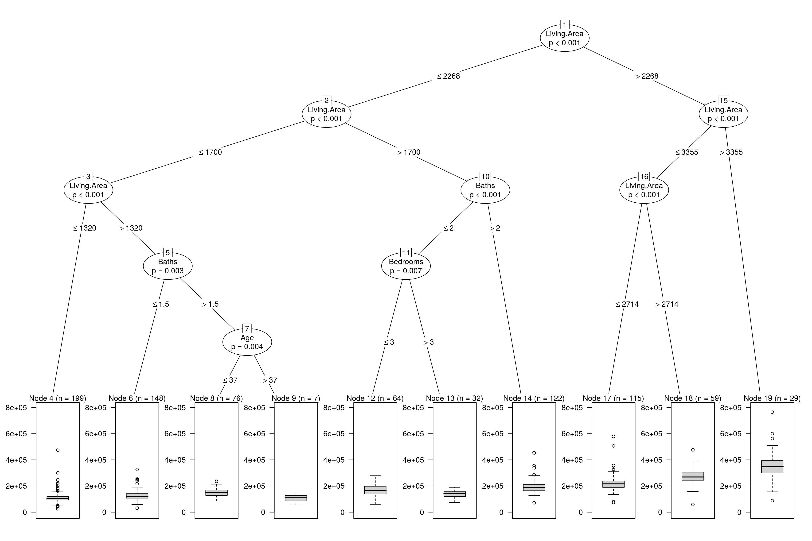
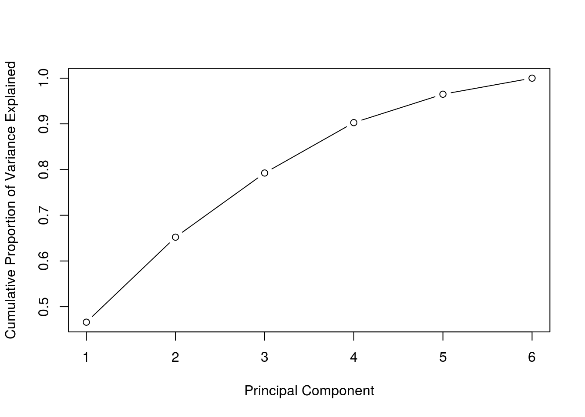
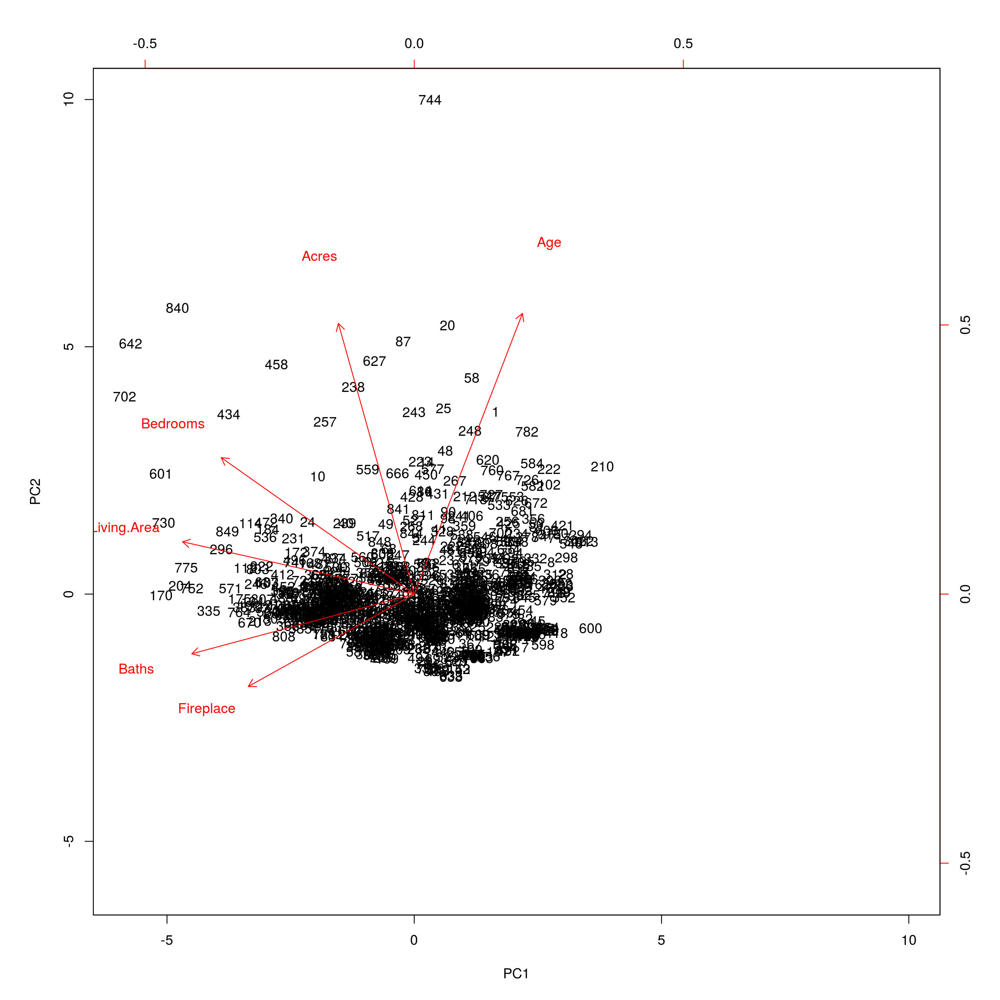

In this project, we will analyze house prices from Saratoga, CA.
First we will read in the required libraries and a database of house prices.
library(dplyr)
library(readr)
library(ggplot2)
library(knitr)
library(caret)
houses = read_csv("http://tiny.cc/mosaic/SaratogaHouses.csv")
houses %>% head() %>% kable() | Price | Living.Area | Baths | Bedrooms | Fireplace | Acres | Age |
|---|---|---|---|---|---|---|
| 142212 | 1982 | 1.0 | 3 | N | 2.00 | 133 |
| 134865 | 1676 | 1.5 | 3 | Y | 0.38 | 14 |
| 118007 | 1694 | 2.0 | 3 | Y | 0.96 | 15 |
| 138297 | 1800 | 1.0 | 2 | Y | 0.48 | 49 |
| 129470 | 2088 | 1.0 | 3 | Y | 1.84 | 29 |
| 206512 | 1456 | 2.0 | 3 | N | 0.98 | 10 |
From examining the head of the file, we see what information the database provides us.
Next we will convert all the columns into numeric data.
houses <- houses %>% mutate(Fireplace = ifelse(Fireplace == "N",0,1))Next we will create a training set and testing set to test some machine learning algorithms. We’ll use 80% of the data for training and 20% for testing.
set.seed(3)
index <- 1:nrow(houses)
testindex <- sample(index, trunc(length(index)/5))
train <- na.omit(houses[-testindex,])
test <- na.omit(houses[testindex,])
testsize <- nrow(test)We’ll compare the different models by mean squared error. First we’ll try the NULL Model (The model whose output is always the mean of the output variable).
mod <- lm(Price ~ 1, data = train)
pred <- predict(mod, test)
mse <- sum( ( pred - test$Price )^2 ) / testsize
mse^(1/2)## [1] 99636.08So on average our error is about $100,000 which is unacceptable.
Next we’ll try a linear model.
mod <- lm(Price ~ ., data = train)
pred <- predict(mod, test)
mse <- sum( ( pred - test$Price )^2 ) / testsize
mse^(1/2)## [1] 57189.04This is significantly better.
Now we’ll try a Conditional Inference Tree.
mod <- train(Price ~ ., data = train, method = "ctree")
pred <- predict(mod, test)
mse <- sum( ( pred - test$Price )^2 ) / testsize
mse^(1/2)## [1] 63163.48More or less the same as the linear model. Finally we will plot the resulting model.
plot(mod$finalModel)
Finally we’ll try to apply PCA (principal component analysis) and see if that improved our results. First we will create the principal components using the feature columns.
prin_comp <- prcomp(train %>% select(-Price), scale. = T)
std_dev <- prin_comp$sdev
pr_var <- std_dev^2
prop_varex <- pr_var/sum(pr_var)Next we will examine the cumulative proportion of variance explained for the principal components.
plot(cumsum(prop_varex), xlab = "Principal Component",
ylab = "Cumulative Proportion of Variance Explained",
type = "b")
Most of the variance is explained by the first two components. Next we will plot the resultant first two principal components.
biplot(prin_comp, scale = 0)
Now to apply some machine learning algorithms, we creat PCA training and testing sets.
train.pca <- data.frame(Price = train$Price, prin_comp$x)
test.pca <- as.data.frame( predict(prin_comp, newdata = test %>% select(-Price)) )
test.pca$Price <- test$PriceApplying a linear model to just the first principal component produces the best mean squared error.
mod <- lm(Price ~ PC1, data = train.pca)
pred <- predict(mod, test.pca)
mse <- sum( ( pred - test.pca$Price )^2 ) / testsize
mse^(1/2)## [1] 63778.04Observe even though we failed to improve the mean squared error, we did manage to reduce the problem from 6 dimensions to 1 dimension and obtain a similar mean squared error.